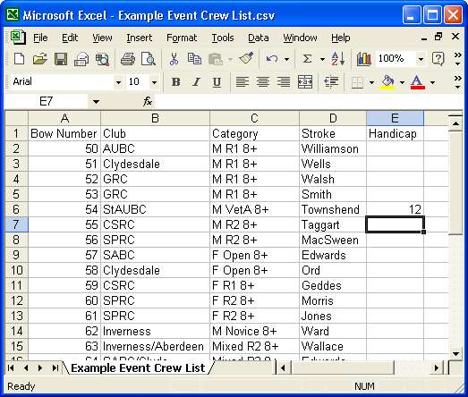

Using Excel to import Crews from your Draw
-
1. Get a blank spreadsheet.
- 2. Set up five columns in the order "Bow Numbers", "Club", "Category", "Stroke" and "Handicap"
This header line is optional and (if present) ignored by rowing timer.
NB - handicap is optional - if used the values should be in seconds. i.e. 65 not 1:05).
- 3. Enter your data.
- 4. Save as a Comma Separated File (*.CSV)
- 5. Load into Rowing Timer on the import tab.
- 6. Check it has loaded OK.
- 7. Advisable (though not necessary) to save your event as a .rot file if you wish.
I have included the example file below in the installation. Have a look in the application "examples" folder.
Which is usually
C:/program files/rowing timer/rot_files/example event crew list.csv
Link may not work if you chose an alternative installation folder
